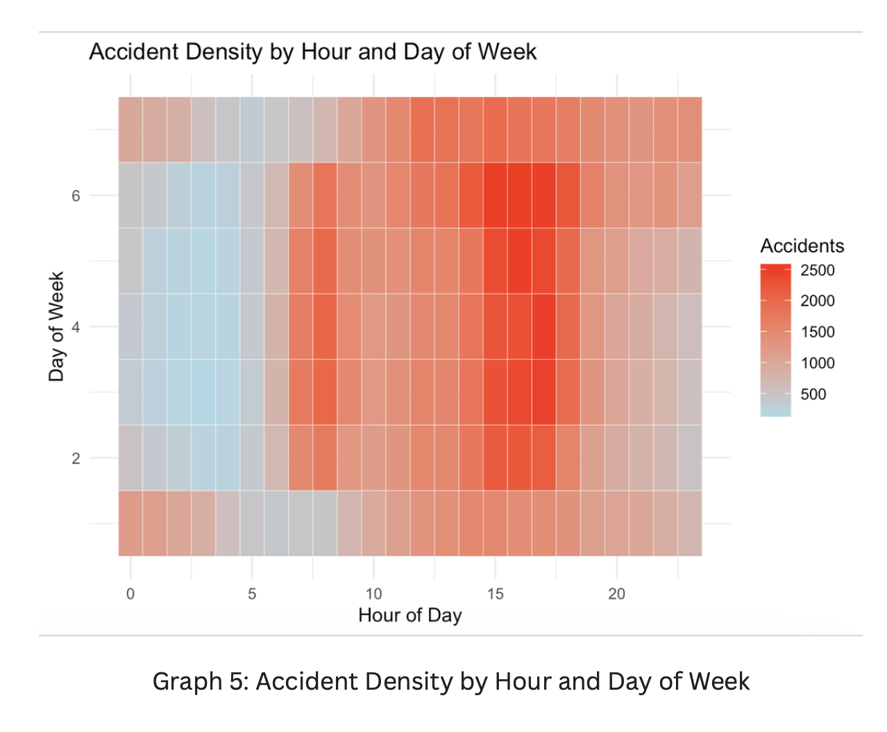
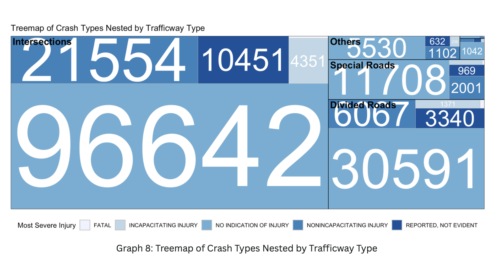
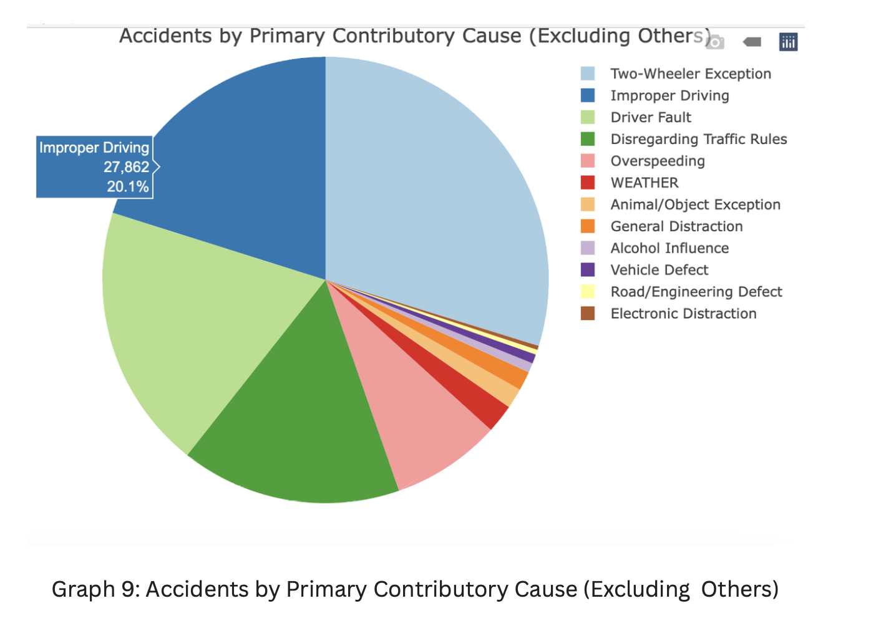
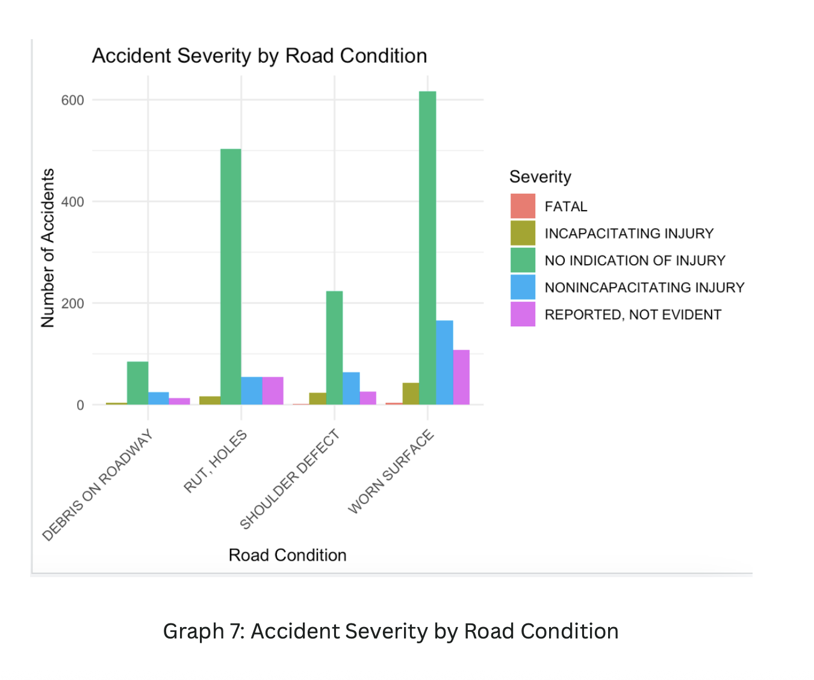
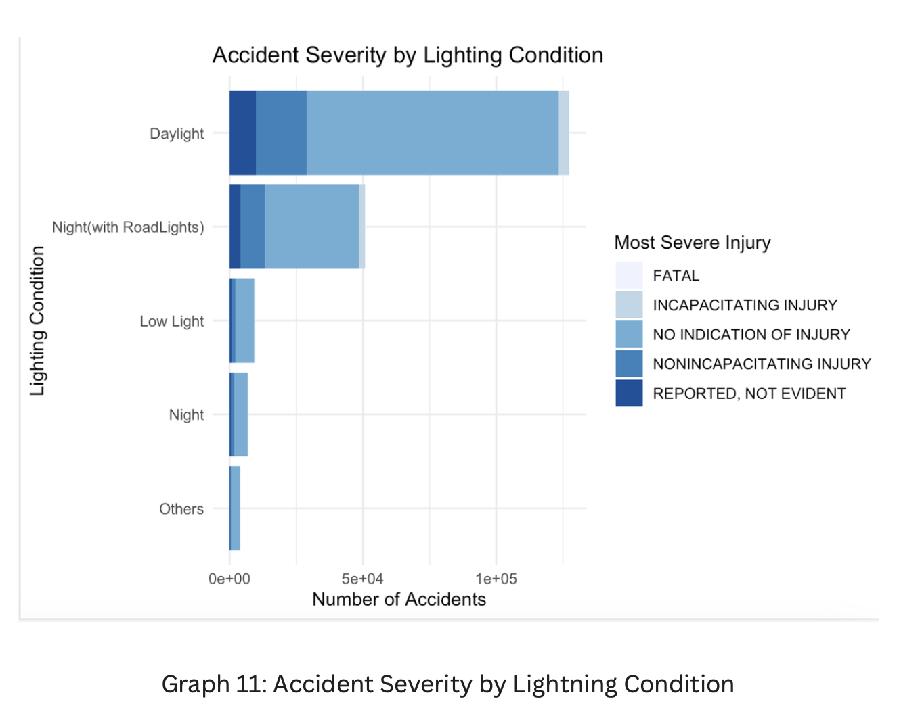
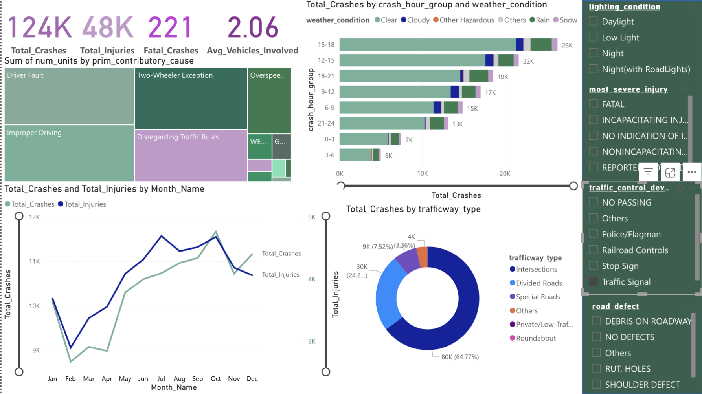

Analysed a Kaggle traffic accidents dataset using R and Power BI to uncover patterns in crash timing, location, cause, and severity — delivering findings and visualisations structured for a Traffic Commission audience. The project covered data cleaning, R visualisations, an interactive Power BI dashboard, and a final presentation translating the analysis into actionable insights.
Each chart was built in R using ggplot2, with the dataset filtered and cleaned prior to visualisation. The five charts below cover temporal patterns, location, cause, road condition, and lighting severity.

Identified a concentrated peak risk window: weekday afternoons between 3–6pm (hours 15–18), Days 2–6. Early morning hours (0–5am) showed the lowest density across all days — consistent with reduced traffic volume.

Intersections accounted for approximately 65% of all crashes — the single most important location finding for the Traffic Commission audience. Divided roads and special roads followed at significantly lower volumes.

Improper driving (20.1%, 27,862 accidents) was the largest identifiable cause. Two-Wheeler exceptions formed the largest overall category. Road/engineering defects were negligible, arguing against prioritising infrastructure spend over behavioural interventions.

Worn surfaces and rut/holes had the highest crash counts among defective conditions, but the majority of crashes overall occurred on defect-free roads — reinforcing that human behaviour is the primary risk factor, not infrastructure.

Daylight had the highest absolute crash volume — consistent with overall traffic volume. Fatal crashes were distributed across lighting conditions, suggesting lighting alone is not a primary severity driver and that other behavioural factors dominate.
An interactive Power BI dashboard was built alongside the R visualisations, covering the full dataset with filters for lighting condition, injury severity, traffic control device, road defect, and trafficway type. The dashboard allowed the Traffic Commission audience to drill into specific scenarios — for example, fatal crashes at intersections during nighttime without road lights.

The dashboard presented four KPI cards (124K total crashes, 48K total injuries, 221 fatal crashes, 2.06 avg. vehicles involved), a primary cause treemap, crash volume by hour group, a monthly trend line comparing crashes and injuries, and a trafficway type donut. All panels were cross-filterable, enabling scenario-level exploration of the data.
The dominant location type — the strongest single finding for traffic infrastructure planning.
Consistent with rush-hour distraction and fatigue — supports targeted enforcement deployment in this window.
Crashes on defect-free roads far outnumber those on defective surfaces — redirecting resources from infrastructure to behavioural interventions is more impactful.
Areas with visible enforcement (Police/Flagman as traffic control device) recorded significantly lower crash counts — suggesting a strong deterrence effect.